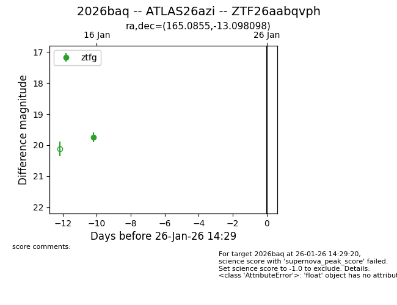
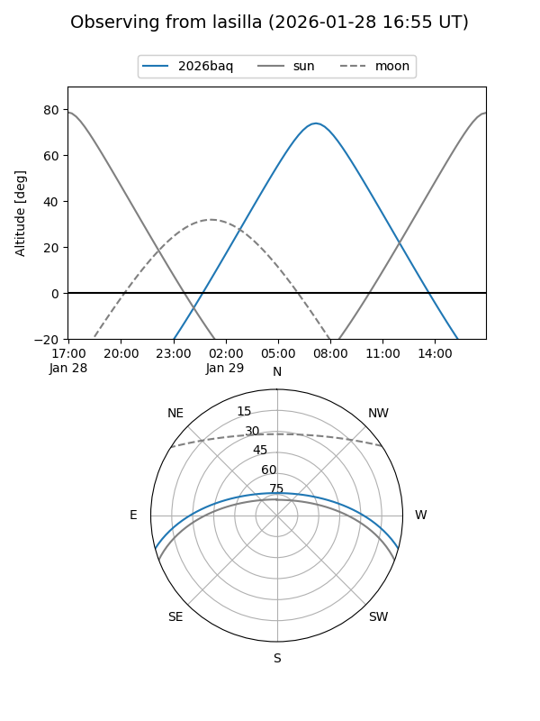
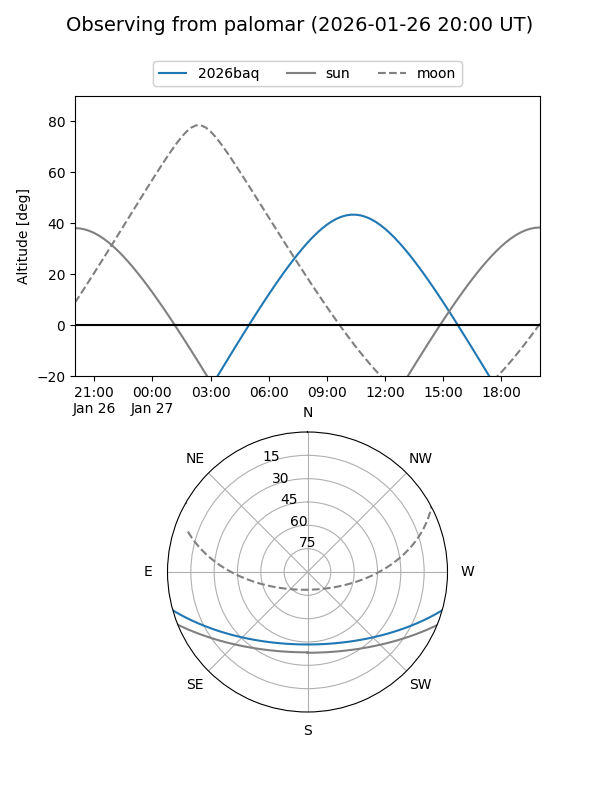

2026baq
Target 2026baq at 2026-01-27 16:21
Aliases and brokers:
FINK: link
Lasair: link
ALeRCE: link
TNS: link
YSE: link
alt names
ZTF26aabqvph (ztf,fink_ztf)
2026baq (tns,yse)
ATLAS26azi (atlas)
Coordinates:
equatorial (ra, dec) = 165.0855,-13.09810
equatorial (HMS+DMS) = 11:00:20.51,-13:05:53.15
galactic (l, b) = (265.5792,+41.57756)
Flags:
Photometry:
last ztfg=19.75
1 ztfg detections
Lightcurve

Visibility


Additional plots